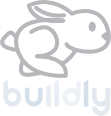

We build open-source tools, training systems, and standards to keep developers relevant in an AI-driven world.
The AI transition is not gradual. It requires new infrastructure, new skills, and open systems that no single company should control.
AI systems are generating code at scale. The role of a developer is shifting from writing syntax to directing systems, reviewing outputs, and owning architecture. Most developers are not prepared for this shift.
Entry-level developer roles are being automated away before new developers have a chance to gain experience. Traditional on-ramps into the profession are disappearing faster than replacements emerge.
Closed AI development platforms lock organizations into vendor ecosystems, obscure how systems make decisions, and price out communities that need access most. Open infrastructure is not optional — it is essential.
Open Build provides the infrastructure, training, and community to help developers lead in an AI-driven world — not just survive it.
Our RAD (Rapid AI Development) Process keeps developers in control. AI assists; developers decide, review, and own outcomes. We train teams to direct AI tools rather than be replaced by them.
We build and maintain open-source MCP (Model Context Protocol) servers, agent orchestration systems, and workflow tools. All auditable, all forkable, all community-governed.
The Foundry is where learning meets production. Developers work on real projects, contribute to live codebases, and gain the applied experience that traditional bootcamps and courses cannot provide.
Every tool we ship includes documented workflows, open decision logs, and auditable outputs. We believe software infrastructure should be understandable — not a black box.
Open Build sits at the center of an ecosystem designed to move open-source work from foundation to real-world impact.
Non-profit. Creates and maintains open-source tools, training systems, and standards. Governs the ecosystem with transparency and public accountability.
Operationalizes the OSS into a commercial platform. Sustains the ecosystem and provides enterprise tooling and services.
buildly.ioReal-world training environment. Developers apply OSS tools on live projects, closing the loop between learning and production work.
firstcityfoundry.comOpen Build creates and stewards the open-source foundation. Buildly commercializes it to sustain the ecosystem. The Foundry trains developers by putting them to work on it — creating a continuous loop of open development and applied learning.
Everything we build is open. Contribute, fork, deploy. These are the tools powering the AI-native development ecosystem.
Open-source microservice framework and API gateway for building modular, scalable applications. The backbone of the Buildly platform — freely available to all.
MCP (Model Context Protocol) server for managing AI agents. Provides open, standardized interfaces for orchestrating AI workflows without vendor lock-in.
Open-source real-time messaging and collaboration platform built for developer communities. Powers transparent team communication across the ecosystem.
A real-world training pathway powered by the Foundry and First City Foundry partnership — learn by contributing, ship real work, grow into AI-assisted roles.
Start by contributing to Open Build projects on GitHub. Real issues, real code, real feedback from experienced maintainers. Build your track record in the open.
Through the Foundry at First City Foundry, developers work on active production projects. No toy apps — real clients, real stakes, real learning.
Graduates emerge ready for AI-native workflows — directing agents, reviewing AI-generated code, and architecting systems that combine human judgment with AI speed.
The Open Build Foundry program is hosted at First City Foundry — a Kansas City-based innovation hub that provides physical space, community, and access to real startup projects. This partnership grounds our training in the real economy of local tech.
Visit First City FoundryOpen is not just a license. It is a commitment to who has access, who has power, and who gets to shape the future of software.
Every line of code we ship is reviewable. Every decision we make is documented. AI development must be auditable to be trustworthy.
Open standards and open tools mean organizations can adopt AI workflows without becoming dependent on any single commercial provider.
AI infrastructure should not be limited to well-funded organizations. Open Build builds tools and training that anyone, anywhere, can access and use.
We design human-in-the-loop workflows by default. Developers retain agency, judgment, and accountability — AI assists rather than replaces.
Open Build is sustained by partners, grants, and organizations that believe in open infrastructure for AI-native development.
Our primary training and execution partner. First City Foundry provides the physical space, community infrastructure, and real-world project access that powers the Open Build Foundry program in Kansas City. Together, we are building a new model for developer training rooted in real work.
firstcityfoundry.comWe partner with podcast creators and media channels to extend our mission. The Open Build Podcast brings conversations about open-source, AI-native development, and the future of the developer profession to a global audience.
Become a Media Partner
Buildly provides the commercial platform and enterprise tooling that operationalizes Open Build's open-source work. This commercial relationship helps sustain development of the OSS ecosystem while keeping the foundation independent and public-interest focused.
buildly.ioOpen Build welcomes applications from grant organizations and public interest foundations aligned with our mission.
Get in TouchNGOs, educational institutions, and government organizations — we want to work with organizations that share our values.
Start a ConversationCompanies and individuals can sponsor specific open-source projects, features, or training programs directly.
Sponsor on GitHubWhether you are a developer, funder, or mission-aligned partner — there is a place for you in this ecosystem.
contact@open.build
Contact us about media partnerships and podcast collaborations